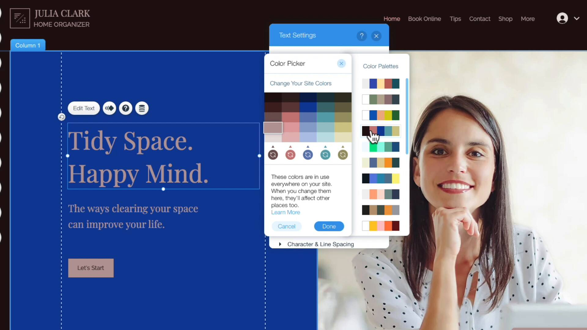

Wix and Squarespace are the two biggest website builders— and it’s not even close. Together they power 55% of websites that are built with a website builder.
But while they’re both popular they also have stark differences. It’s almost like Mac vs PC— Squarespace is curated and design-y while Wix is occasionally chaotic but allows for a lot of freedom to customize.
I recommend Squarespace over Wix but it’s important to understand the differences— and that’s what this article will explain.
Wix vs Squarespace At A Glance
-
Two Most Popular Website Builders
Wix and Squarespace combined are 55% of the website builder market— significantly more than any other company.
-
Mac vs PC
Their differences are almost like Mac vs PC: Squarespace is curated and design-y while Wix is occasionally chaotic but allows for a lot of freedom to customize.
-
Different Page Editors
Wix is an unstructured editor where you drag elements anywhere on a page. Squarespace is a structured editor where elements snap into columns and rows.
-
Both Have Excellent Features
There are core features that every website builder just needs to have: photo galleries, maps, forms, audio players— that kind of thing. Both Wix and Squarespace have these covered. (Wix may have a slight edge in the amount of features.)
-
Templates
Wix has more templates than Squarespace but Squarespace has better templates. This isn't necessarily a knock on Wix's templates as Squarespace has the best templates of any website builder.
Table of Contents
The Editor
The biggest difference between Wix and Squarespace is the page editor.
Wix’s Unstructured Editor
With Wix you can move any element anywhere on your page— even moving elements by one pixel if you want. It’s an unstructured editor:


You can drag any element anywhere on your page with Wix— even pixel by pixel.
Being able to drag an element anywhere on a page feels freeing BUT it can also lead to frustrating problems.
For example, watch what happens when I move an image from the top of the page to the bottom:
I had to make the same change twice— once for the the desktop version and once for the mobile version! Wix’s unstructured editor didn’t know to automatically do this. That’s frustrating!
Squarespace’s Structured Editor
Squarespace doesn’t run into the same problems— because Squarespace has a structured editor.
In Squarespace, you can’t move an element anywhere on a page. Instead Squarespace only allows you to drag elements (called Content Blocks) into rows and columns. There’s an inherent and sensible structure that you stay within.

Squarespace structured editor only lets you drag and drop within the lines and grey boxes (though you can also adjust the column sizes).
Winner: Squarespace
Overall I recommend Squarespace’s structured page editor over Wix’s unstructured page editor.
Wix’s unstructured editor may give you more flexibility but it introduces a cascade of knock-on problems— such as having to make the same edit twice.
Features
There are core features that every website builder just needs to have— for example:
- Photo galleries
- Maps
- Forms
- Audio players
Both Wix and Squarespace have these core features covered.
In recent years both Squarespace and Wix have aggressively moved beyond websites and into online presence— each launching their own online booking features, ecommerce and email marketing.
It’s really only when you move beyond these core features that the differences become clearer. Overall, I would characterize it like this: Wix has more features but Squarespace tends to do a better job of features.
Features Wix Supports (And Squarespace Does Not)
For example, below is a list of features that Wix supports out of the box. The only way to get these features with Squarespace would be to integrate with a 3rd party provider.
| FEATURE | WIX | SQUARESPACE |
|---|---|---|
| Forum | With Wix Forum app. | Requires integration with Muut. |
| Live Chat | With Wix Live Chat app. | Requires integration with a 3rd party provider such as Tawk. |
| Takeout Orders | With Wix Restaurant Orders app. | Requires integration with Chownow. |
| Ticketing & RSVP | With Wix Events app. | Requires integration with Eventbrite. |
Important: Many features in the above list cost an additional fee (paid on top of your monthly paid plan). For example, Wix Chat starts at $10 for the ad-free version and Wix Events charges a 2.5% service charge on all ticket sales.
Squarespace Often Does A Better Job On Features
Squarespace may not match Wix on every feature, they often do a better job at the features that they do match.
Here are some examples.
1. Restaurant Menus
Here is what editing a restaurant menu looks like on Wix— watch how many clicks it takes to edit one item:

Spoiler! It takes 10 clicks
That’s just takes way too long.
I’m sympathetic to Wix— restaurant menus are deceptively hard to format for websites. It’s why many restaurants just link to a PDF menu. But this also shows you how much more thoughtful Squarespace’s restaurant menu editor is.
For restaurant menus Squarespace invented a simple markup language. You follow the formatting patterns and can write your menu in real-time. It’s really clever and intuitive:
For restaurant menus Squarespace invented a simple markup language— you follow the formatting patterns and write your menu in real-time.
Much easier, right?
2. Ecommerce Donations
Another example of Squarespace doing a better job of features is donations.
Wix can technically accept donations but it’s just a basic donation button that sends visitors to Paypal. It is not a full donation system.
Squarespace on the other hand has an excellent, fully-featured donation system— it’s much better:
| FEATURE | SQUARESPACE | WIX |
|---|---|---|
| Donor Specific Checkout | Yes | No |
| Donor Email Receipts | Yes | No |
| Suggested Amounts | Yes | No |
I used to work for a non-profit and these three features are critical. You don’t want donors having an ecommerce experience and you’ll find suggested amounts on every major non-profit— it’s a best practice.
Setting a suggested amount for donations.
3. Podcasts
Finally, here’s one last example: podcasts.
Wix offers a Podcast Player but it doesn’t syndicate podcasts. Syndicating is critical to a podcast website— it’s what allows you to submit your podcast to Apple Podcasts and Spotify.
Squarespace is the only website builder that can syndicate podcasts. It’s another example of Squarespace taking the time to get a feature right.
Tip: Both Squarespace and Wix integrate with Zapier— and you’ll want to take advantage of this. Zapier let’s you create automations based on visitor activity. So for example, you could tell Zapier to send you a text message or create a new Trello card every time someone fills out a form. It’s a very handy way to create features unique to you.
Templates
In terms of volume, Wix has significantly more templates than Squarespace: Wix has 691 and Squarespace has 70.
Squarespace Template Examples
Squarespace has the best templates of any website builder. This is subjective to a degree but honestly there’s no other website builder that matches Squarespace’s clean, modern templates:
The 'Noll' template.
The 'Beaumont' template.
The 'Paloma' template.
Wix Template Examples
Wix’s best templates aren’t quite as nice as Squarespace and their worst templates can be… corny.
Wix example template.
Another Wix example template.
Another example Wix template— though this one feels pretty outdated.
Note: in both Wix and Squarespace you can’t switch your template once you’ve chosen it.
Template Customization
Squarespace also has better template customization. For example, it’s much easier to apply your brand colors consistently. Basically you choose a palette that then applies throughout your website. If you want to get more specific and choose colors for individual elements you can do that too. Here’s how it works:
Choosing a color palette.
Frankly it’s confusing and difficult to do this with Wix. You can technically sort of do it…. but it’s just way, way more complicated. I would be very surprised if many users took advantage of this complicated system:
Applying a new color palette with Wix.
Ecommerce
Wix and Squarespace have both aggressively built ecommerce features over the last few years.
While both cover the fundamentals of a store (inventory management, discounts, product variations, taxes etc.) they also have advanced features too:
| FEATURE | SQUARESPACE | WIX |
|---|---|---|
| Digital Products | Yes | Yes |
| Custom Email Receipts | Yes | Yes |
| Connect To Print On Demand Services | Yes | Yes |
| Point Of Sale System | Yes | Yes |
| Instagram Shop Tagging | Yes | Yes |
| Automated Cart Recovery | Yes | Yes |
| Recurring Payment Products | Yes | Yes |
But beyond that Squarespace does have some ecommerce features that Wix does not:
| FEATURE | SQUARESPACE | WIX |
|---|---|---|
| Gift Cards | Yes | No |
| Back In Stock Notifications | Yes | No |
| Low Stock Notifications | Yes | No |
I’ve also found Squarespace tends to build more sophisticated features.
For example, Squarespace let’s you add sophisticated forms to products— so that you can ask form additional information when a customer checks out. You can choose from a variety of field types: dates, radio buttons, phone numbers, text fields, file uploads and more:
Squarespace let's you attach sophisticated forms to certain producst.
Wix technically let’s you add form fields to products— but you can only add text fields:
Wix has more limited form builder attached to products.
Blogging
Squarespace has the best blogging of any website builder. If the primary purpose of your site is blogging, just use Squarespace.
Squarespace supports a long list of features:
- Tagging
- Categories
- Drafts
- Comments (Disqus or Squarespace)
- User roles (example: moderator)
- Google AMP support
- … And much more.
But beyond these core features Squarespace goes a step further with support for teams— you can have collaborators with different roles (comment moderation, content editor) and have multiple authors on a single post.
Squarespace's blog editor.
It’s not that Wix’s blogging is bad— Wix actually has a decent blog editor. It looks a bit out-dated but everything you need is included (scheduled posts, post tags and categories, drafts and Disqus and Facebook comments). It’s more just Squarespace has excellent blog features.
Pricing
A few notes to help you compare pricing plans:
Who Has The Lower Price?
When comparing annual plans, Squarespace’s Personal plan ($12 / month) is cheaper than Wix’s Combo plan ($13 / month). Both plans include a free domain name if you pay annually.
Squarespace's Personal plan is the cheapest plan between Wix and Squarespace.
In the past, Wix offered a Connect Domain plan that was only $5 / month— but it included an ad on your page (it looked like this). This plan is no longer available in the US.
Be Careful: Misleading Pricing
It’s common for website builders to advertise their annual plan on per month cost. Which doesn’t make sense. You aren’t paying $13 / month. You’re actually paying $156 / year.
Squarespace at least makes this clear on their pricing page:
Even though Squarespace advertises their annual plans as a per month cost, at least this toggle shows you the difference.
Wix does not make this clear at all on their pricing page:
Wix explains this.... in the fineprint.
So just remember that when you are comparing prices!
Wix Bandwidth Limitations
All Squarespace plans have unlimited bandwidth. But Combo, Wix’s cheapest plan has a 2 GB limitation. Which is ridiculous in 2020. It should be unlimited.
How limiting is the 2 GB / month limit? Well, calculating bandwidth usage is tricky but here’s one thing to think about: this Wix example site is 1.4 MB. So you wouldn’t want to average more than 50 people / day visit your homepage.
Conclusion
In the end I recommend Squarespace over Wix. Here’s how I would summarize:
- Squarespace structured editor is much more stable— you may prefer Wix’s unstructured editor but I would suggest you keep in mind some of the frustrating things an unstructured editor introduces.
- Wix has more features but Squarespace tends to do a better job of features.
- Squarespace has better templates and template customization.
- Squarespace has the cheapest plan— by $12.
It’s worth mentioning that this doesn’t mean Wix is bad. It’s more about how good Squarespace is. There are plenty of worse options than Wix.
And ultimately the difference could be about preference: Wix’s unstructured editor offers a high-degree of control while Squarespace is much more curated.
I hope you found this helpful— thanks for reading!
Frequently Asked Questions
Which is better Wix or Squarespace?
It's close but I do recommend Squarespace over Wix. Squarespace has a better page editor and better templates. Wix has more features.
Whats cheaper Squarespace or Wix?
Wix's Connect Domain is cheaper but it includes an ad and bandwidth limitations. Squarespace's Personal is the cheapest plan between Wix and Squarespace with unlimited bandwidth and no advertisements.
What is easier to use Wix or Squarespace?
Squarespace. Wix has an unstructured editor that allows for more freedom but is occasionally chaotic and overwhelming. Squarespace has a structured editor that is less flexible but more intuitive.
Related Articles:
-
WordPress vs Website Builders
Should you use WordPress or a website builder to build a website? Well, it depends— mostly on you.
-
Shopify vs WooCommerce
Shopify and WooCommerce are both great ecommerce site builders, but for very different users.
-
Squarespace vs GoDaddy
Squarespace is the best overall website builder, but GoDaddy may work for people who don’t have a lot of time or technical skills.
-
Squarespace vs Shopify: Which is Better? (2022)
Trying to decide between Squarespace and Shopify? Make sure you understand these important differences.
-
How Squarespace And WordPress Are Different
Squarespace and WordPress are both tools for building website but this article explains how they are different.
-
Wix vs Shopify: Is There Even a Competition? (2022)
Trying to decide between Wix and Shopify? Make sure you understand these important differences.
-
Wix vs Weebly
Five important differences to understand before choosing between Wix and Weebly.
-
Wix vs WordPress
Eight important differences to understand before deciding between Wix and WordPress.